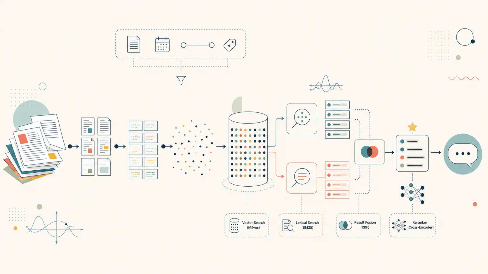

Cover image generated with AI.
Local RAG Series, Part 3: Two retrieval signals, fused, then re-scored by a second model
The previous post described a "vanilla" RAG
pipeline: parse PDFs with Docling, chunk them, embed the chunks with a bi-encoder, store the vectors in
Milvus, and retrieve the top K by cosine similarity. That pipeline works — but pure vector
search has a blind spot, and this post is about closing it.
Two additions turn the vanilla pipeline into a hybrid one: a classical lexical search algorithm
(BM25) running alongside the embedding search, with the two result lists fused into one;
and a second, more expensive model — a cross-encoder reranker — that re-scores the fused
candidates before the top few reach the language model. A small addition on top, metadata
filtering, lets a query be scoped to a specific document, year range or chunk type before either
retrieval method even runs.
As with the previous post, every component here runs locally — no hosted search API, no paid
reranking endpoint.
A bi-encoder embedding model compresses a passage of arbitrary length into a single fixed-size vector.
That compression is exactly what makes large-scale search possible — but it's also lossy. Two passages
that are topically similar but factually different (different model names, different years, different
table numbers) can end up close together in embedding space, because "topically similar" is largely
what the model was trained to capture.
Concretely, a question like "What BLEU score does the 'base' model get in Table 3?" is mostly
about matching exact tokens — Table 3, base, BLEU — not
about broad semantic similarity. A dense embedding of that question will sit close to any
passage discussing BLEU scores and model variants, with no special preference for the one that
actually contains "Table 3".
This is precisely the gap that classical lexical search fills: it has no notion of "meaning", but it is
extremely good at "this document contains these exact words".
BM25 (Best Match 25) is a
bag-of-words ranking function — the same family of algorithm that powered search engines long before
embeddings existed. For a query $Q$ and document $D$, it scores roughly as:
$$\text{BM25}(D,Q) = \sum_{t \in Q} \text{IDF}(t) \cdot
\frac{f(t,D)\cdot(k_1+1)}{f(t,D)+k_1\cdot\left(1-b+b\cdot\frac{|D|}{\text{avgdl}}\right)}$$
Each query term $t$ contributes more if it's rare across the corpus (high IDF) and appears often
in this particular document ($f(t,D)$), with diminishing returns and a length normalisation that
stops long documents from winning just by being long. There is no learning involved, and no notion of
synonyms — it is, by construction, exact-match.
This pipeline uses rank-bm25's
BM25Okapi implementation, wrapped in a small BM25Index class:
(chunk_id, content) pair via build(items), with
simple whitespace tokenisation on lowercased text — good enough for English textdata/bm25_index.pkl; auto-loaded on startup, and rebuilt from
Milvus if the file is missing/bm25 CLI
commandquery(text, top_k) returns only chunks with a score > 0 — a chunk
that shares no terms with the query simply doesn't appear
Vector search and BM25 produce two ranked lists with scores on completely different scales — cosine
similarity is bounded in [-1, 1] (and in practice closer to [0, 1] for this
model), while BM25 scores are unbounded and corpus-dependent. The HybridSearcher combines
them with a min-max normalised weighted sum:
TOP_K_VECTOR = 10 candidates from Milvus with cosine scoresTOP_K_BM25 = 10 candidates from the BM25 index with raw scores[0, 1]0 for the missing componentHYBRID_VECTOR_WEIGHT = 0.6 and HYBRID_BM25_WEIGHT = 0.4TOP_K_RERANK = 20 candidates move on to the
next stageHybridSearcher falls back to pure vector search
transparently — the rest of the pipeline doesn't need to know.
config.py, they're easy to A/B test: setting
HYBRID_VECTOR_WEIGHT = 1.0, HYBRID_BM25_WEIGHT = 0.0 reproduces the vanilla pipeline from
the previous post exactly, and 0.0 / 1.0 gives pure BM25 — useful baselines for measuring
whether hybrid fusion is actually helping on a given document set.
Hybrid fusion fixes the "exact match" blind spot, but min-max normalisation plus a fixed weight is
still a fairly crude way to combine two very different signals — it has no idea what the query or the
passages actually say, only their scores. The next stage adds a model that reads the query and
each candidate passage together.
The embedding model from the previous post is a bi-encoder: query and passage are each encoded
into a vector separately, with no interaction between them until the final dot product. That
separation is what makes it fast enough to run over an entire corpus. A cross-encoder does the
opposite: it feeds the query and the passage into the same transformer together, as a single
input, so every token of the query can attend to every token of the passage (and vice versa) before a
single relevance score comes out the other end. This is much more accurate — but it means one forward
pass per (query, passage) pair, which is far too slow to run against an entire vector store.
The solution is a cascade: a cheap, broad bi-encoder + BM25 search narrows the field from
"everything" down to TOP_K_RERANK = 20 candidates, and only those 20 get the expensive,
precise cross-encoder treatment, which narrows them down to the TOP_K_FINAL = 5 that
actually reach the language model.
The reranker model is
BAAI/bge-reranker-v2-m3, hosted on Hugging Face and loaded locally via
sentence_transformers.CrossEncoder. The weights (~568 MB) are downloaded once on first
use and cached — exactly like the embedding model, there's no per-request API call.
In code, reranking is a single batched call:
scores = model.predict([(query, chunk.content) for chunk in candidates])
# sort candidates by score, descendingRERANKER_ENABLED = False in config.py skips this stage entirely,
trading some quality for lower latency
Every chunk carries structured fields from the parsing stage — paper_id,
year, chunk_type, section — stored as scalar fields in Milvus
alongside the embedding. These can be used to pre-filter the candidate pool with a boolean expression
before either retrieval method runs:
/filter year >= 2022
/filter chunk_type == "table"
/filter paper_id == "2605.22665"
/filter year >= 2020 && chunk_type == "text"/filter clear.
Putting it all together, a question now travels through six stages instead of two:
User question
|
v
Embedder.embed_query() (BAAI/bge-base-en-v1.5, local)
|
v
HybridSearcher
+-- VectorStore.search_with_scores() -> TOP_K_VECTOR candidates (cosine, HNSW)
+-- BM25Index.query() -> TOP_K_BM25 candidates (lexical)
| min-max normalise each list
| fuse: 0.6 x vec_norm + 0.4 x bm25_norm
v
TOP_K_RERANK merged candidates
|
v
Reranker (BAAI/bge-reranker-v2-m3, local cross-encoder)
|
v
TOP_K_FINAL chunks
|
v
ChatEngine -> Ollama (llama3.1, local) -> answer with inline citationsconfig.py — pure vector, pure BM25, hybrid
without reranking, or the full stack — which makes it straightforward to measure exactly which
addition is responsible for an improvement (or a regression) on a given document set.
To measure the impact of hybrid search and reranking, we re-ran the same evaluation pipeline
described in the previous article
— the same three books (Hormonal by Martie Haselton, The Mind-Gut Connection by
Emeran Mayer, and The Metabolism Reset by Lara Briden), the same 50 auto-generated
question–answer pairs, and the same ground-truth relevant_chunk_ids. The only
difference is the retrieval method: instead of plain cosine similarity, retrieval now goes through
the full hybrid pipeline — BM25 fusion (0.6 / 0.4 weighting) followed by cross-encoder reranking
with bge-reranker-v2-m3.
The table below compares the baseline (pure vector search) against the hybrid + reranker pipeline:
| Metric | Baseline (vector only) | Hybrid + reranker | Delta |
|---|---|---|---|
| MRR | 0.745 | 0.758 | +0.013 |
| Recall@1 | 0.430 | 0.450 | +0.020 |
| Recall@3 | 0.660 | 0.733 | +0.073 |
| Recall@5 | 0.697 | 0.803 | +0.106 |
Every metric improves, with the largest gains at wider retrieval windows: Recall@5 jumps from
0.697 to 0.803 (+10.6 percentage points), meaning the hybrid pipeline surfaces roughly one extra
relevant chunk per ten questions compared to the baseline. Recall@3 also sees a meaningful lift
(+7.3 pp), confirming that both BM25 fusion and the reranker are pulling relevant chunks into
higher positions, not just appending them at the tail of the list.
MRR and Recall@1 improve more modestly. As discussed in the previous article, Recall@1 is
structurally bounded for questions with multiple ground-truth chunks — retrieving one out of two
relevant chunks at rank 1 still scores 0.5, not 1.0. The small MRR delta (+0.013) suggests that
the reranker is better at recovering missing chunks than at reordering the top
position, which already worked reasonably well with pure vector search.
The per-difficulty comparison shows where the gains concentrate:
| Difficulty | n | MRR | Recall@1 | Recall@3 | Recall@5 | ||||
|---|---|---|---|---|---|---|---|---|---|
| base | hybrid | base | hybrid | base | hybrid | base | hybrid | ||
| Easy | 17 | 0.578 | 0.681 | 0.471 | 0.529 | 0.647 | 0.735 | 0.647 | 0.824 |
| Medium | 17 | 0.887 | 0.789 | 0.539 | 0.451 | 0.696 | 0.725 | 0.775 | 0.804 |
| Hard | 16 | 0.771 | 0.807 | 0.271 | 0.365 | 0.635 | 0.740 | 0.667 | 0.781 |
Easy questions see the most dramatic improvement. Recall@5 jumps from 0.647 to 0.824
(+17.7 pp), and MRR from 0.578 to 0.681. In the baseline, easy Recall@5 plateaued at the same
value as Recall@3, meaning the missing chunks were entirely absent from the top 5. BM25 fusion
fixes this: these single-passage factual questions often contain specific terms that lexical
matching can capture even when the semantic embedding misses.
Hard questions improve across every metric — Recall@1 rises from 0.271 to 0.365, and
Recall@3 from 0.635 to 0.740. The cross-encoder reranker likely plays the larger role here:
hard questions require cross-passage reasoning with two or three ground-truth chunks, and the
reranker's ability to read query and passage together helps it rank genuinely relevant chunks
higher than a dot-product comparison can.
Medium questions show a mixed picture. Recall@3 and Recall@5 both improve, but MRR drops
from 0.887 to 0.789 and Recall@1 from 0.539 to 0.451. These questions were already the best
served by pure vector search — they connect two semantically close passages, which is exactly what
cosine similarity excels at. The fusion weighting and reranker occasionally reshuffle the top
position in a way that pushes the first relevant chunk down a rank, even though overall coverage
improves. This trade-off is worth monitoring: a higher HYBRID_VECTOR_WEIGHT or a
different reranker model might recover the medium MRR without sacrificing the gains elsewhere.
Despite the improvements, 4 out of 50 questions still score zero across all metrics — none of their relevant chunks appear in the top 5. Inspecting these failures reveals recurring patterns:
CHUNK_MAX_TOKENS or sliding-window chunking could
help isolate the signal.
These failure modes point upstream to chunking strategy rather than retrieval — a
direction that may be explored in a future article.
Pure vector search is a strong default, but it's only one view of relevance — a smooth, semantic one
that can miss exact terms entirely. BM25 adds a sharp, lexical view that vector search structurally
cannot replicate, and fusing the two gives a candidate pool that's strong on both axes. The
cross-encoder reranker then spends its (comparatively expensive) compute budget where it matters most:
re-scoring a small shortlist with full query-passage interaction, something no bi-encoder can do at
corpus scale. Metadata filtering, finally, lets the user short-circuit all of this when they already
know the scope of their question.
None of this required leaving the local machine — Docling, the embedding model, BM25, the reranker and
the chat model are all running on localhost, with Hugging Face used only as a one-time
download source for model weights.
Further reading on the building blocks used here:
Parts of this article were drafted with the help of AI, then reviewed and edited by the author before publication.